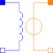

ElectroMagneticConverterIdeal electromagnetic energy conversion |

|
Information
This information is part of the Modelica Standard Library maintained by the Modelica Association.
The electromagnetic energy conversion is given by Ampere's law and Faraday's law respectively:
Vm = N * i N * dΦ/dt = -v

Vm is the magnetic potential difference applied to the magnetic circuit due to the current i through the coil (Ampere's law).
There exists a left-hand assignment between the current i (Put your hand around the coil, fingers pointing in the direction of current flow.)
and the magnetic potential difference Vm (thumb).
Note: There exists a right-hand assignment between the current through the coil i (fingers) and the magnetomotive force mmf.
The mmf has the opposite direction compared with Vm, it is not used in Modelica.
For the complete magnetic circuit the sum of all magnetic potential differences counted with the correct sign in a reference direction is equal to zero: sum(Vm) = 0.
The magnetic flux Φ in each passive component is related to the magnetic potential difference Vm by the equivalent of Ohms' law: Vm = Rm * Φ
Note: The magnetic resistance Rm depends on geometry and material properties. For ferromagnetic materials Rm is not constant due to saturation.
Therefore the sign (actual direction) of Φ (magnetic flux through the converter) depends on the associated branch of the magnetic circuit.
v is the induced voltage in the coil due to the derivative of magnetic flux Φ (Faraday's law).
Note: The negative sign of the induced voltage v is due to Lenz's law.
Note: The image shows a coil wound counter-clockwise (positive mathematical direction). If a coil wound clockwise has to be modeled instead, the parameter N (Number of turns) can be set to a negative value.
The flux linkage Ψ and the static inductance L_stat = |Ψ/i| are calculated for information only. Note that L_stat is set to |Ψ/eps| if |i| < eps (= 100*Modelica.Constants.eps).
Parameters (1)
| N |
Value: 1 Type: Real Description: Number of turns |
|---|
Connectors (4)
| port_p |
Type: PositiveMagneticPort Description: Positive magnetic port |
|
|---|---|---|
| port_n |
Type: NegativeMagneticPort Description: Negative magnetic port |
|
| p |
Type: PositivePin Description: Positive electrical pin |
|
| n |
Type: NegativePin Description: Negative electrical pin |
Used in Examples (6)
|
Modelica.Magnetic.FluxTubes.Examples.BasicExamples Educational example: iron core with airgap |
|
|
Modelica.Magnetic.FluxTubes.Examples.BasicExamples Educational example: iron core with airgap |
|
|
ToroidalCoreQuadraticCrossSection Modelica.Magnetic.FluxTubes.Examples.BasicExamples Educational example: iron core with airgap |
|
|
Modelica.Magnetic.FluxTubes.Examples.BasicExamples Inductor with saturation in the ferromagnetic core |
|
|
Modelica.Magnetic.QuasiStatic.FluxTubes.Examples Linear inductor with ferromagnetic core |
|
|
Modelica.Magnetic.QuasiStatic.FluxTubes.Examples Non linear inductor with ferromagnetic core |
Used in Components (3)
|
Modelica.Magnetic.FluxTubes.Examples.MovingCoilActuator.Components Detailed actuator model for rough magnetic design of actuator and system simulation |
|
|
Modelica.Magnetic.FluxTubes.Examples.SolenoidActuator.Components Simple network model of a lifting magnet with planar armature end face |
|
|
Modelica.Magnetic.FluxTubes.Examples.SolenoidActuator.Components Advanced network model of a lifting magnet with planar armature end face, split magnetomotive force |